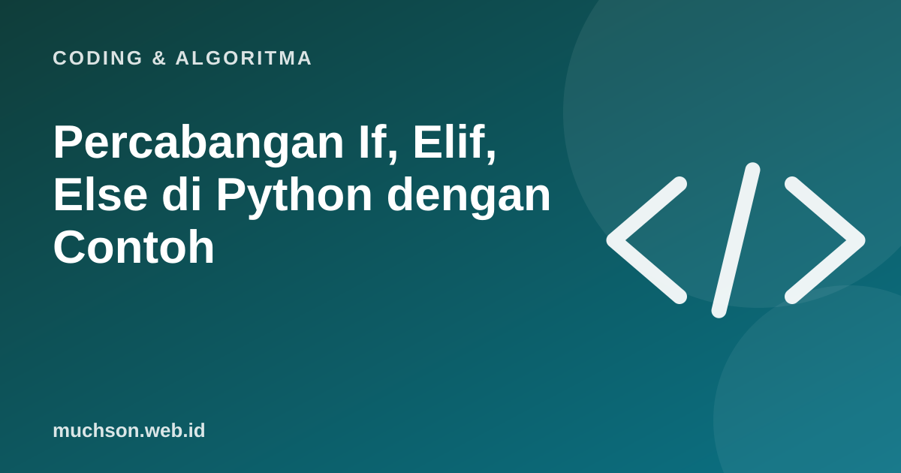

Beranda › Artikel › Coding & Algoritma
Coding & AlgoritmaPercabangan If, Elif, Else di Python dengan Contoh
Program menjadi pintar ketika bisa memilih: memberi diskon bila belanja cukup banyak, menampilkan pesan berbeda untuk nilai yang berbeda, atau menolak kata sandi yang terlalu pendek. Semua itu memakai percabangan. Di Python, percabangan ditulis dengan if, elif, dan else.

Bentuk dasar
nilai = 82
if nilai >= 85:
print("A")
elif nilai >= 70:
print("B")
elif nilai >= 55:
print("C")
else:
print("Perlu remedial")Python memeriksa kondisi dari atas ke bawah dan menjalankan blok pertama yang benar, lalu melewati sisanya. Karena itu urutan kondisi penting: periksa batas tertinggi dulu.
Bila urutannya dibalik (cek >= 55 dulu), nilai 82 akan masuk "C" karena kondisi pertama yang benar langsung dipakai. Ini kesalahan klasik.
Operator perbandingan dan logika
| Operator | Arti | Contoh |
|---|---|---|
== | sama dengan | status == "lunas" |
!= | tidak sama dengan | kota != "Malang" |
>, <, >=, <= | perbandingan | umur >= 17 |
and | keduanya benar | umur >= 17 and punya_ktp |
or | salah satu benar | member or belanja > 500000 |
not | kebalikan | not sudah_bayar |
in | termasuk dalam | "@" in email |
belanja = 320000
member = True
if belanja >= 500000 or (member and belanja >= 300000):
diskon = 0.1
else:
diskon = 0
print(f"Bayar: {belanja * (1 - diskon):,.0f}")# Python bisa merangkai perbandingan
suhu = 26
if 20 <= suhu <= 30:
print("Suhu nyaman")Kondisi bersarang
punya_tiket = True
umur = 15
if punya_tiket:
if umur >= 13:
print("Silakan masuk")
else:
print("Harus didampingi orang dewasa")
else:
print("Beli tiket dulu")Kondisi bersarang boleh, tetapi bila lebih dari dua tingkat, kode sulit dibaca. Pertimbangkan menggabungkan dengan and atau memakai "keluar lebih awal" di dalam fungsi.
Ekspresi kondisi satu baris
status = "lulus" if nilai >= 75 else "remedial"match-case (Python 3.10 ke atas)
perintah = "maju"
match perintah:
case "maju":
print("Robot bergerak maju")
case "kiri" | "kanan":
print("Robot berbelok")
case _:
print("Perintah tidak dikenal")Contoh lengkap: tahun kabisat
Aturan kabisat kalender Gregorian: habis dibagi 4, kecuali habis dibagi 100, tetapi tetap kabisat bila habis dibagi 400.
def kabisat(tahun):
return tahun % 4 == 0 and (tahun % 100 != 0 or tahun % 400 == 0)
for t in [1900, 2000, 2024, 2026]:
print(t, kabisat(t))
# 1900 False, 2000 True, 2024 True, 2026 FalseKesalahan umum
Tanya jawab
Apa beda if, elif, dan else?
Kenapa harus pakai == bukan =?
Apakah Python punya switch-case?
Bagaimana memeriksa beberapa nilai sekaligus?
Sumber dan bacaan lanjut
- Python: More Control Flow Tools (if, match)
- PEP 636: Structural Pattern Matching Tutorial
- Percabangan jika-maka untuk anak (artikel terkait)